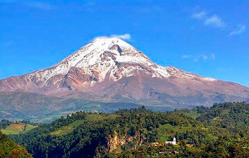
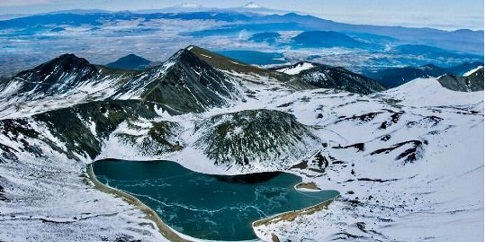

Volcanes en México |
|||||
|  | Pico de Orizaba o Citlaltépetl | Ubicado entre los estados de Veracruz y Puebla | Con una altura de 5,636 metros sobre el nivel del mar. | Vistalo en el Parque Nacional Pico de Orizaba | |
|  | Nevado de Toluca o Xinantécatl | Ubicado en el Estado de México. | Con una altura de 4,680 metros sobre el nivel del mar. | Su principal atractivo son: Las lagunas del Sol y de la Luna, las más altas en su especie contrastan el árido paisaje volcánico con sus aguas turquesas. |
|